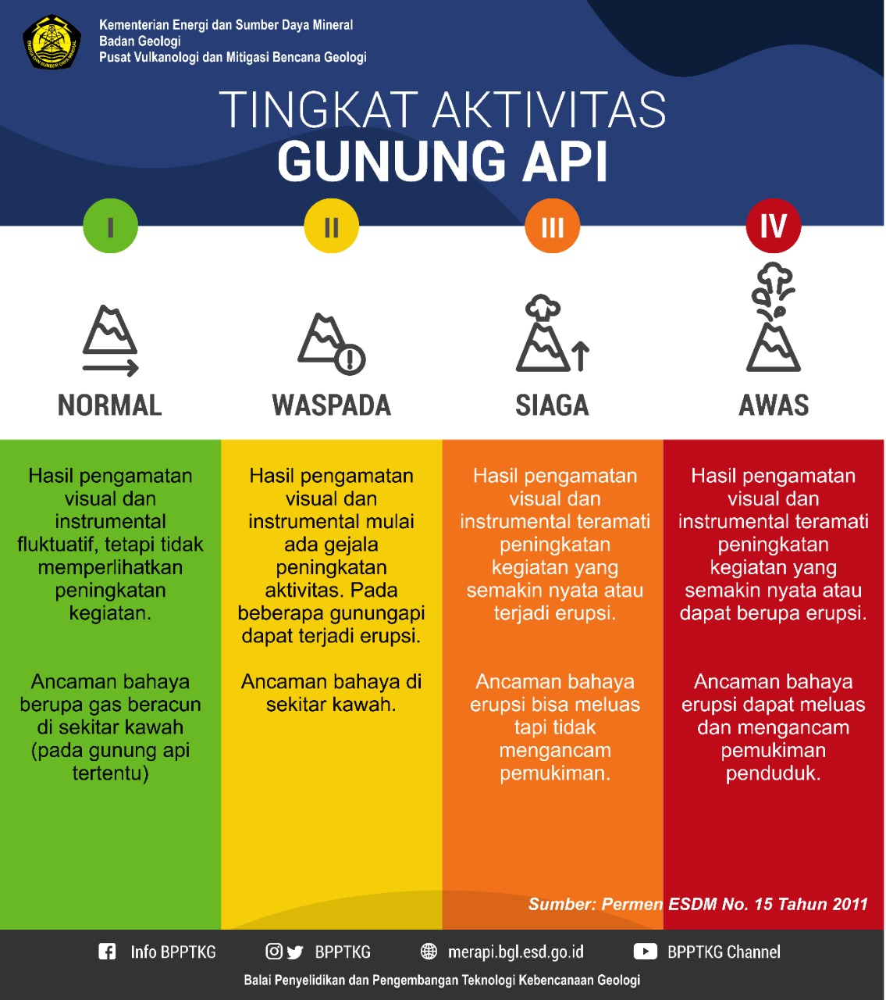
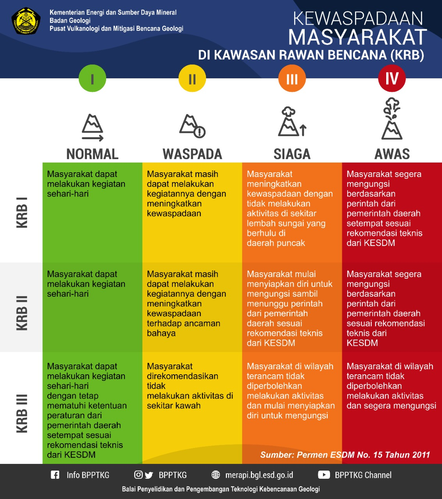
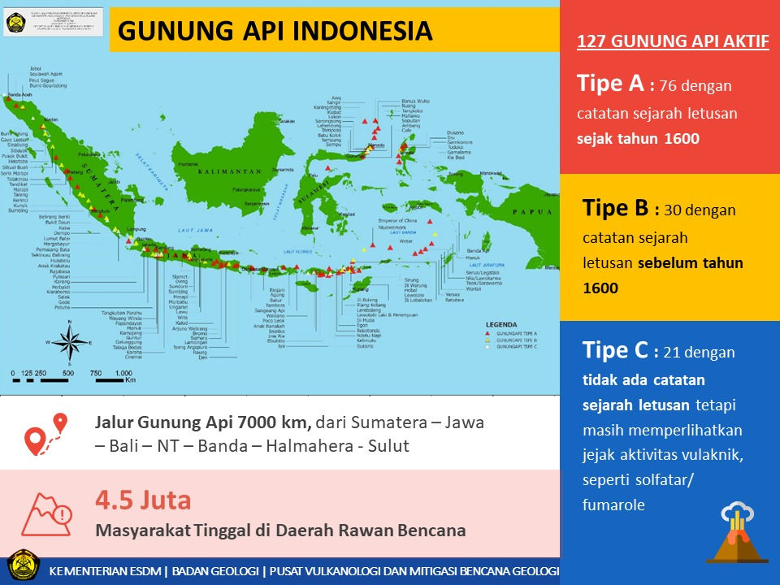
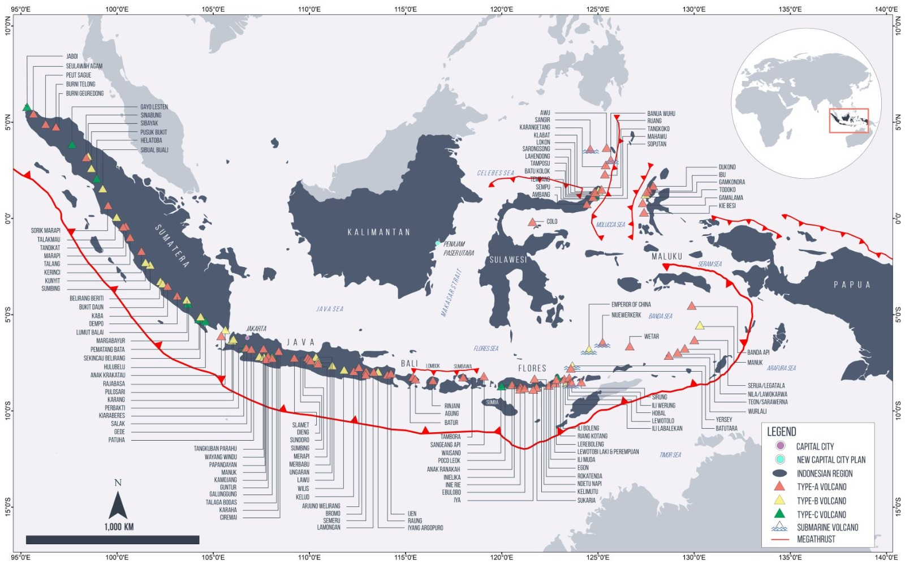

Sumber dan
referensi kawasan.
Daftar sumber berita, literatur ilmiah, data pengamatan, dan referensi pendukung yang digunakan untuk membangun konteks Anak Krakatau.
01 / BERITA
Peristiwa Anak Krakatau
ESDMErupsi Menerus Anak Krakatau Berakhir, Aktivitas Gunung Api Kembali Menurun dan Tetap DipantauInformasi aktivitas gunung api dan pemantauan terbaru.
BNPBUpdate Aktivitas Gunung Anak Krakatau, Status Level III Masih BerlakuPembaruan status dan aktivitas Gunung Anak Krakatau.
DARILAUT.IDTubuh Gunung Anak Krakatau Berubah Drastis Setelah Runtuh 2018Ulasan perubahan tubuh gunung setelah peristiwa 2018.
DETIKFakta-fakta Erupsi Anak Krakatau Hingga Diduga Akibatkan TsunamiRangkaian fakta erupsi dan kaitannya dengan tsunami.
DETIKTsunami Selat Sunda Dipicu Longsor Gunung Anak Krakatau Seluas 64 HektareInformasi longsoran tubuh gunung sebagai pemicu tsunami.
DETIKTsunami Selat Sunda Sampai ke Daratan 24 Menit Setelah LongsorInformasi waktu tiba tsunami di daratan.
02 / SUMBER JURNAL
Publikasi dan jurnal rujukan
Artikel JGG · ID 2092Artikel pada laman JGG, Fakultas Teknik Universitas Lampung.
Artikel JRL · ID 104Artikel pada laman jurnal JRL, Fakultas Teknik Universitas Lampung.
Forum for Social and Humanities StudiesLaman jurnal FSHS, diterbitkan oleh PT Inovasi Penelitian Terpadu.
FSHS · terbitan nomor 2Halaman terbitan jurnal Forum for Social and Humanities Studies.
Mapping Recent Shoreline Changes Spanning the Lateral Collapse of Anak Krakatau Volcano, IndonesiaApplied Sciences, 2020 · DOI: 10.3390/app10020536.
Submarine landslide megablocks show half of Anak Krakatau island failed on December 22nd, 2018Nature Communications, 2021 · DOI: 10.1038/s41467-021-22610-5.
The 22 December 2018 tsunami from flank collapse of Anak Krakatau volcano during eruptionScience Advances, 2020 · DOI: 10.1126/sciadv.aaz1377.
03 / DATA
Dataset dan layanan pendukung
Peta interaktif VULCANEOSVisualisasi data spasial-temporal kawasan studi.
Data garis pantaiGeoJSON garis pantai dalam koordinat WGS84.
Parameter oseanografiDataset SST, CHL, dan TSS menurut tahun pengamatan.
Parameter gelombangSementara dinonaktifkan. Dataset sebelumnya tidak digunakan sampai tersedia file pengganti yang tervalidasi.
NASA Ocean ColorReferensi layanan data warna laut dan penginderaan jauh.
Smithsonian GVPInformasi referensi aktivitas vulkanik global.
04 / EDUKASI & PETA
Edukasi kebencanaan dan pemetaan vulkanik

Tingkat aktivitas gunung api Penjelasan tingkat aktivitas gunung api dari Normal hingga Awas.
Kewaspadaan masyarakat di kawasan rawan bencana Panduan umum kesiapsiagaan masyarakat berdasarkan tingkat kawasan rawan bencana.
Mengenal gunung api Indonesia Infografik sebaran dan tipe gunung api di Indonesia.
Peta vulkanik Indonesia Peta sebaran gunung api dan jalur vulkanik di wilayah Indonesia.